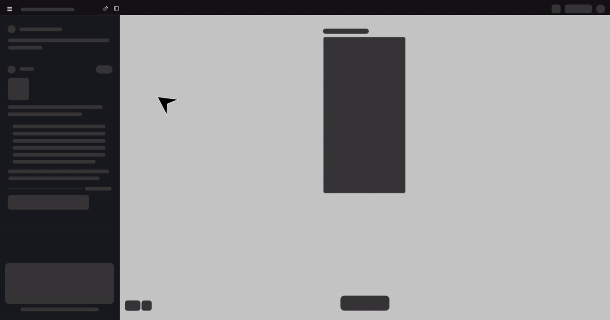
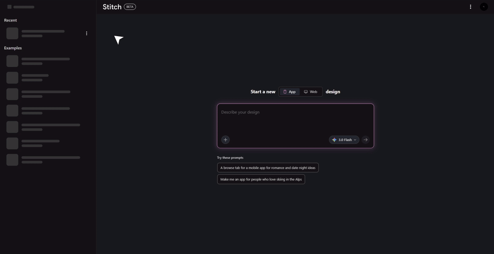

Context
While designing and iterating on a UI project in Stitch with Google, I generated multiple project files across different exploration phases. As the number of projects increased, routine maintenance actions such as renaming or deleting unused projects became frequent, revealing an unexpected friction point in the workflow.
The Experience
From the All Projects screen, each project appeared as a static card.
Naturally, I hovered over a project, expecting a familiar three-dot (⋮) menu — a common interaction pattern across modern productivity tools.
Nothing appeared.
To delete a project, I had to:
The current flow — 4 unnecessary steps

The current 4-step flow to perform a simple housekeeping action — open project → hamburger → action → confirm
This felt unnecessarily heavy for a lightweight task.
The Friction
What should have been a 2-second housekeeping action turned into a multi-step workflow.
Insight
The issue wasn't missing functionality. It was misplaced functionality.
Project-level actions were buried inside the project, violating common UX conventions and increasing interaction cost.
Opportunity
By introducing a hover-based 3-dot menu on project cards (similar to Google Gemini):
What changes
- Users could manage projects without opening them
- The interface would align with industry standards
- Cognitive and operational load would drop significantly

The proposed fix — a hover-triggered ⋮ menu on each project card. Rename, delete, duplicate — without ever opening the project.